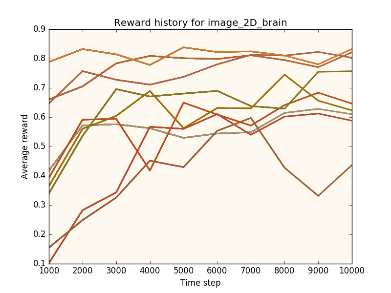

Becca 8 is out and it has some big improvements.
Performance
Becca 8 is performing well on its ten test worlds. Each one presents a different type of reinforcement learning task. None of them are exceptionally challenging, but for one algorithm to perform well on all of them (as Becca does) requires an exceptionally robust approach.
In order to make Becca run comfortably on laptops, most of the computation is streamlined. Although it's written in python, Becca uses numba to compile the hardest working parts into C. Those bits run very fast.
Ease of use
Installing Becca is a one-line job on the command line.
pip install beccaRunning the test worlds is easy too. In python:
>>>import becca_test.test
>>>becca_test.test.suite()If you have questions or want to chat, please join us on Gitter . Making Becca faster, smarter and easier to use are baby steps toward it's larger purpose - to be useful. I hope you enjoy working with it.
Brandon
August 5, 2016